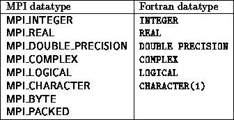
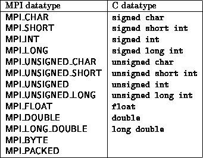

The send buffer specified by the MPI_SEND operation consists of count successive entries of the type indicated by datatype, starting with the entry at address buf. Note that we specify the message length in terms of number of elements, not number of bytes. The former is machine independent and closer to the application level.
The data part of the message consists of a sequence of count values, each of the type indicated by datatype. count may be zero, in which case the data part of the message is empty. The basic datatypes that can be specified for message data values correspond to the basic datatypes of the host language. Possible values of this argument for Fortran and the corresponding Fortran types are listed below.

Possible values for this argument for C and the corresponding C types are listed below.

The datatypes MPI_BYTE and MPI_PACKED do not correspond to a Fortran or C datatype. A value of type MPI_BYTE consists of a byte (8 binary digits). A byte is uninterpreted and is different from a character. Different machines may have different representations for characters, or may use more than one byte to represent characters. On the other hand, a byte has the same binary value on all machines. The use of the type MPI_PACKED is explained in Section Pack and unpack .
MPI requires support of the datatypes listed above, which match the basic datatypes of Fortran 77 and ANSI C. Additional MPI datatypes should be provided if the host language has additional data types: MPI_LONG_LONG_INT, for (64 bit) C integers declared to be of type longlong int; MPI_DOUBLE_COMPLEX for double precision complex in Fortran declared to be of type DOUBLE COMPLEX; MPI_REAL2, MPI_REAL4 and MPI_REAL8 for Fortran reals, declared to be of type REAL*2, REAL*4 and REAL*8, respectively; MPI_INTEGER1 MPI_INTEGER2 and MPI_INTEGER4 for Fortran integers, declared to be of type INTEGER*1, INTEGER*2 and INTEGER*4, respectively; etc.
[] Rationale.
One goal of the design is to allow for MPI to be implemented as a library,
with no need for additional preprocessing or compilation.
Thus, one cannot assume that a communication call has information on the
datatype of variables in the communication buffer; this information must be
supplied by an explicit argument.
The need for such datatype information will become clear in
Section Data conversion
.
( End of rationale.)